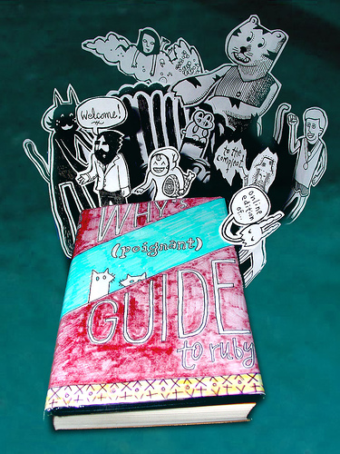

(Poignant) Guide Earlies #

As I’m wrapping up the 8th chapter of my obscure Ruby book, you might be interested in a sneak peek at some of the art going into this 20-page fully-illustrated chapter. The Poignant Guide Earlies set on flickr has just a few scans.
This weekend I’ll also be posting some scans from Expansion Pak No. 2, which covers packaging libraries. This expansion pak will have appearances by Spiderman, Indiana Jones, various illegal Windows product keys, illegal scans of sheet music—in short, a pile of things which will render the book unprintable. With any luck, the first illegal programming manual.
rluv
The Berklee Real Book of Ruby. Let’s go to Berklee.
fred
Wasn’t Lions’ `A Commentary on the UNIX Operating System’ the first illegal programming manual?
Klondike
No, this is before rocket boots existed.
LninYo
Dude, I’d totally buy a printed version of this book.
Drew
I want it!
the dragon
i would buy a printed book if it contained no ‘chunky bacon’ references. i detest chunky bacon. bacon should be wafer thin and smoked lightly. for those who enjoy ‘chunky bacon’ isn’t about time they were given a polyphonic ringtone?
the dragon
chu chu chu chu, cha cha cha cha. chun chun chun, chun. chunk, chunk, chunk, chunk. CHUNKY , CHUNKY, CHUNKY , CHUNKY…... bacon.
get the melodic drift?
rluv
No
<|:{
the dragon: is that sung to the tune of ‘My Sharona’?
Why: I hope the foxes are studying law with Lawrence Lessig.
FlashHater
w00t, the (p)G will be a completed masterwork! I would go for a hard copy as well, but I, unlike others, like my bacon references to be chunky.
Peter Cooper
Prolific!
LninYo
The hardcover should have blank pages in strategically relevant places and should come with all the figures pre-printed Then we could make our own pop-up book if we wanted to..
ahem.
why
Okay, yes, I can do that. You are a great resource, LninYo, have I ever told you that? Well, you are.
MonkeeSage
...a popup of “a huge onion right in the middle crease of the book.” :)
topfunky
I think the book needs to be sold as a package with the Bacon of the Month Club:
http://www.gratefulpalate.com/?p=Category_11
murphy
bought.
hoverbird
dr. jones there’s no time- you throw me the ruby, i throw you the whip!
deez
eating pigs is gross. how about s/chunky bacon/curdled tofucan/g. savory !
vruz
poignant samizdat !
LninYo
that’s very kind of you why. I was going to make my own popups if we didn’t get them in the book, so thanks! :)
SLUGGY
I LIKE RUBY AND HOPE TO LEARN MORE . IF I KEEP USING THE RAILS YOU WILL NOT WONDER AGAIN . LOOK FOR IT ON REDDIT .
why
SLUGGY , I have been watching reddit and many things are happening. Thankyou!
Mystic564648
If I keep using the rails…
YOU WILL NOT WONDER AGAIN .
Alejo
Book with bacon!!!